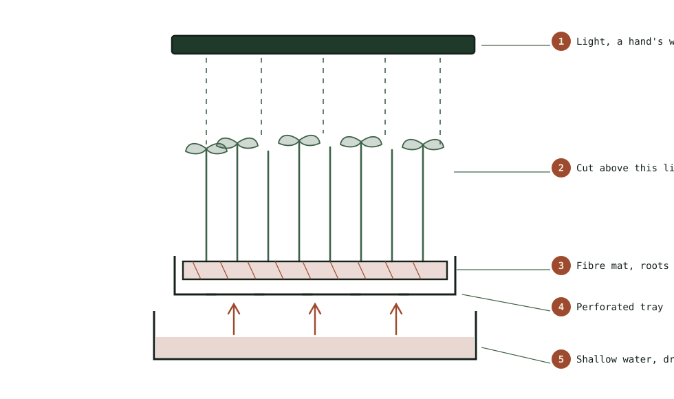

Guide
Harvesting and Storing Microgreens
The ten minutes after cutting decide whether a tray lasts a week or two days, and washing them is the fastest way to waste the work.
As an Amazon Associate this site earns from qualifying purchases. Links to products may be affiliate links. This costs you nothing extra and does not change what gets recommended. Nothing here is medical advice.
Ten to fourteen days of growing can be undone in the ten minutes after cutting. Microgreens are perishable in a way that surprises people who have handled ordinary salad leaves, and almost everything that shortens their life happens at harvest rather than in storage.
Two decisions carry most of the outcome: when you cut, and whether you wash. Neither is obvious and both are usually got wrong the first time.

The harvest window
Microgreens are cut at a specific stage, and the window is narrower than the growing guides suggest.
The first leaves to appear are the cotyledons, the seed leaves the plant brought with it. They are edible, mild, and often quite pretty. Many species can be harvested here, particularly the fast ones.
The true leaves follow, and they look different: recognisably shaped like the mature plant rather than like generic ovals. Most species reach their best flavour as the first true leaves are opening, which is where the characteristic taste arrives without the toughness that comes later.
Past that point, most species turn bitter, the stems fibre up, and the tray begins competing with itself for light. The change is not gradual over a week. It can happen across a day or two, particularly in warm conditions.
Radish is the usual first crop, and radish sprouting seed is sold in sprouting grade. Radish and mustard are both ready fast and go sharp quickly. Peas tolerate a wider window and stay sweet longer. Sunflower needs watching, since it goes from excellent to unpleasantly tough within about forty eight hours.
The practical instruction is to check daily from the point the first true leaves appear, and to cut a day early rather than a day late. An early harvest is slightly milder. A late one is bitter and cannot be undone.
Cutting
Sharp scissors, cut high, cut dry.
Sharp matters more than it sounds. A dull blade crushes stems rather than cutting them, and crushed tissue leaks, browns, and spoils from the cut end. Ordinary kitchen scissors that actually cut paper cleanly are fine. Herb scissors with multiple blades are unnecessary.
High means above the medium line, leaving root, seed hull, and any growing medium behind in the tray. This is the structural advantage microgreens have over sprouts, and it disappears if you cut low and drag medium into your harvest. Cut a centimetre above the mat or soil surface. The lowest centimetre of stem is the least pleasant part anyway.
Dry means do not water on the morning of harvest. A tray watered a few hours before cutting produces wet foliage, and wet foliage is the thing that spoils. Let the tray run slightly dry for the last half day. The plants are about to be cut and will not suffer.
Cut in small handfuls rather than sweeping across the tray. Gather a bunch gently between finger and thumb, cut, and lay it into a container rather than dropping it. Bruised microgreens brown at the bruise.
Why not to wash
This is the instruction people find hardest to accept and it makes the largest difference.
Washed microgreens keep for a day or two. Unwashed and dry, most hold for around a week. The difference is not marginal.
Water sits in the crevices between leaves and stems and does not evaporate inside a refrigerated container. That trapped moisture is what everything unwanted grows in, and no amount of shaking or patting removes it from a mass of small delicate leaves.
The safety logic that applies to sprouts applies much less here, because the part of a microgreen you eat never touched the growing medium. You are cutting the aerial portion of a plant grown in a clean tray indoors. It is a fundamentally different exposure from a sprout eaten root and all.
If you want them washed, wash the portion you are about to eat, immediately before eating it. Never wash the whole harvest and refrigerate it.
Drying, if you must wash
Occasionally a harvest picks up medium, usually because the crop fell over or the cut went too low. In that case, wash and then dry very thoroughly rather than storing damp.
A salad spinner in short gentle bursts is the only practical tool. Long spins damage delicate leaves. Two or three brief bursts, checking between them, removes most of the water.
Follow with a rest on a dry towel for fifteen minutes before containerising. The leaves should feel dry to the touch and not merely not dripping.
Expect three or four days from a washed harvest regardless of how well you dry it. Plan to eat it rather than store it.
Second cuts, and why most species do not give one
The obvious question after a first harvest is whether the tray will grow another crop from the stubble. For nearly every microgreen the answer is no, and understanding why saves a week of waiting.
A microgreen is cut above the medium but below the point where most species keep a growing point capable of regenerating. What remains is a short length of stem and a root, with no reserve left in the seed and no leaves to photosynthesise with. Most trays simply sit there and then rot, which also means a tray left hopefully in place becomes a mould problem rather than a second crop.
Peas are the notable exception. Pea shoots cut above the lowest node will frequently produce a smaller second cut, because peas retain viable growing points low on the stem. The second harvest is smaller and slightly tougher than the first, and a third is rarely worth waiting for.
Everything else should be composted with the mat or medium and the tray reset. This is not wasteful. The seed cost is the bulk of the input, and the growing medium in a soilless system is a small part of the total. Resetting also breaks any disease cycle that might have started, which matters if you are running trays continuously.
The practical consequence is that yield planning should assume one cut per tray. Anyone budgeting seed for a weekly rotation should count trays rather than harvests, and the hub page covers where that sits against the far cheaper economics of jar sprouting.
If a second cut matters to you, grow peas.
Containers and refrigeration
A rigid container beats a bag, because microgreens crush easily and a bag lets them compress under whatever is stacked on it.
Line the base with a folded dry paper towel. This absorbs the small amount of moisture the leaves continue to release and is the single cheapest improvement to shelf life available.
The container should close but does not need to be airtight. A little air exchange helps. Fully sealed containers concentrate the moisture the towel is trying to absorb.
Store in the main body of the refrigerator rather than the crisper drawer. Crisper drawers are designed to hold humidity, which is correct for whole vegetables and wrong for cut microgreens.
Do not pack them down. Fill the container loosely, and use two containers rather than compressing one.
Freezing, which does not work
The question comes up because a good tray can outpace a household, and the answer is worth stating plainly so nobody wastes a harvest finding out.
Microgreens do not freeze usefully. The leaves are thin and almost entirely water, and ice crystals rupture the cell walls that give them their texture. What thaws is limp, dark, and watery, with none of the crispness that was the point of growing them.
Blanching before freezing preserves colour slightly and destroys the texture completely, which defeats the purpose for a crop eaten raw.
The workable answer is to grow less rather than to preserve more. Sow a smaller tray, or stagger sowing dates so the harvest arrives in portions you will actually eat within the week.
Reviving a tired harvest
Microgreens that have gone limp but are not slimy or discoloured can often be recovered.
A brief soak in very cold water, five minutes at most, restores turgor to leaves that have merely dried. Follow with thorough spinning and a fresh towel, and eat them the same day. This is a rescue rather than a reset.
Slimy, browning, or sour smelling greens do not come back. Discard them.
Harvesting a rotation
Anyone running trays continuously will want to stagger rather than harvest everything at once.
Sow a new tray on the day you harvest the previous one, and you will settle into a rhythm where one tray is always ready. The cycle length differs by species, so a rotation of radish and peas will drift out of sync unless you adjust sowing dates.
Cut only what you will eat within the week. A living tray in the kitchen keeps far better than a cut harvest in the refrigerator, and there is no advantage to harvesting early except convenience.
RUN THE NUMBERS
Illustrative ranges only, and not a promise about your results.
| Handling | Realistic refrigerated life |
|---|---|
| Cut dry, unwashed, towel lined container | Around a week |
| Cut dry, unwashed, sealed bag | 3 to 5 days |
| Washed and thoroughly dried | 3 to 4 days |
| Washed and stored damp | 1 to 2 days |
| Cut wet from a freshly watered tray | 1 to 2 days |
Every row above involves the same crop and the same growing effort. The spread is entirely a function of the ten minutes after cutting.
WHAT GOES WRONG
Slimy within two days. Cut wet, washed, or stored sealed. Usually more than one of the three.
Browning at the cut ends. Dull scissors crushing rather than cutting.
Grit or medium in the harvest. Cut too low. Stay a centimetre above the surface.
Bitter flavour. Harvested past the true leaf window. Check daily and cut early.
Crushed and bruised leaves. Bagged, or packed down, or something stacked on top in the refrigerator. Use a rigid container and fill it loosely.
DO THIS NOW
- Stop watering the tray on the morning you plan to harvest.
- Check your scissors cut paper cleanly. If they do not, use a different pair.
- Cut a centimetre above the medium, in small handfuls, laying rather than dropping them into a rigid container lined with a dry paper towel.
- Wash only the portion you are about to eat, immediately before eating it.
Next
For the growing setup that produces a tray worth harvesting properly, see microgreens without soil.
If your crop is stretching and pale before it ever reaches the harvest window, the problem is upstream of anything on this page. Grow lights for a windowsill run covers the one variable that no harvest technique can compensate for.